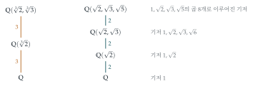

STEP II 2023, 문제 4
다음으로 넘어가기 전에 문제를 먼저 읽어 보자. 이 문제는 OCR에서 내려받을 수 있는 2023년 STEP 문제지 모음(zip 파일)의 STEP II 문제지에 있다: www.ocr.org.uk/Images/707102-2023-past-papers.zip
도입
\(\sqrt2\)는 정수 계수 다항식 \(x^2 - 2\)의 근이다. \(\sqrt3\)도 \(x^2 - 3\)의 근이다. 그렇다면 \(\sqrt2 + \sqrt3\)도 어떤 정수 계수 다항식의 근일까? \(\sqrt2 + \sqrt3 + \sqrt5\)나 \(\sqrt[3]2 + \sqrt[3]3\)은 어떨까?
정수 계수 다항식의 근이 되는 수를 대수적 수(algebraic number)라 한다. 이 문제는 직접 손으로 근호를 소거하여 대수적 수의 합이 다시 대수적 수임을 보인다. 이 과정에서 나오는 차수 \(4\), \(8\), \(6\), \(9\)는 우연이 아니다. 이 차수는 각 수가 얼마나 “복잡한지”를 재는 척도이며, 바로 이 척도, 곧 체의 확대 차수(degree of a field extension)가 고대 그리스의 문제인 정육면체의 배적 문제와 각의 삼등분 문제를 마침내 해결하였다.
시작하기 전에
\(\sqrt2\)를 근으로 갖는 다항식을 찾으려면 \(x = \sqrt2\)의 양변을 제곱하여 제곱근을 없앤다. 서로 다른 두 제곱근은 어떻게 하나씩 없앨 수 있을까?
한 제곱근을 한쪽으로 분리한 뒤 제곱하면 그 제곱근이 사라진다. 그다음 다른 제곱근을 분리하여 다시 제곱한다. 제곱할 때마다 차수는 두 배가 될 수 있다. 이것이 이 문제의 전략 전부이다. 근호를 하나씩 소거하는 것이다.
차근차근 풀기
단계 1 두 개의 제곱근
\((x - \sqrt2)^2 = 3\)이면 \(x^2 - 2\sqrt2\,x + 2 = 3\)이므로 \(x^2 - 1 = 2\sqrt2\,x\)이다. 양변을 제곱하면 남은 제곱근이 사라져 \((x^2 - 1)^2 = 8x^2\), 즉 \[x^4 - 10x^2 + 1 = 0. \qed\] 이다. 또 \(x = \sqrt2 + \sqrt3\)은 \((x - \sqrt2)^2 = (\sqrt3)^2 = 3\)을 만족하므로 \(\mathrm{f}(\sqrt2 + \sqrt3) = 0\)이다.■
단계 2 세 개의 제곱근
\(x = \sqrt2 + \sqrt3 + \sqrt5\)라 하면 \(x - \sqrt5 = \sqrt2 + \sqrt3\)은 \(\mathrm{f}\)의 근이다. \(\mathrm{f}(x - \sqrt5) = 0\)을 \(P(x) + \sqrt5\,Q(x) = 0\) 꼴로 나타내 보자. 그다음 \(\sqrt5\)는 어떻게 소거할까?
\((x - \sqrt5)^2 = x^2 + 5 - 2\sqrt5 x\)와 \((x - \sqrt5)^4 = \bigl(x^2 + 5 - 2\sqrt5x\bigr)^2 = x^4 + 30x^2 + 25 - 4\sqrt5\,x(x^2 + 5)\)를 이용하여 전개하면 \[\mathrm{f}(x - \sqrt5) = \bigl(x^4 + 30x^2 + 25\bigr) - 4\sqrt5\,x(x^2 + 5) - 10\bigl(x^2 + 5\bigr) + 20\sqrt5\,x + 1.\] 이다. 정리하면 \(P(x) = x^4 + 20x^2 - 24\)이고 \(Q(x) = -4x^3 - 20x + 20x = -4x^3\)이다. 따라서 \(x^4 + 20x^2 - 24 = 4\sqrt5\,x^3\)이다. 양변을 제곱하면 \[\bigl(x^4 + 20x^2 - 24\bigr)^2 = 80x^6,\] 이고, 전개하면 \[\mathrm{g}(x) = x^8 - 40x^6 + 352x^4 - 960x^2 + 576. \qed\] 를 얻는다. (검산: \(400 - 48 = 352\)를 이용하면 \((x^4 + 20x^2 - 24)^2 = x^8 + 40x^6 + 352x^4 - 960x^2 + 576\)이고, 여기서 \(80x^6\)을 빼면 \(\mathrm{g}\)가 된다.)
단계 3 삼차방정식의 근과 제곱근
\(x = a + \sqrt2\)이면 \(x - \sqrt2\)는 \(t^3 - 3t + 1\)의 근이다. 이를 대입하고, \(\sqrt2\)가 있는 항과 없는 항을 나눈 뒤 제곱하라.
\((x - \sqrt2)^3 = x^3 - 3\sqrt2\,x^2 + 6x - 2\sqrt2\)이므로 \[(x - \sqrt2)^3 - 3(x - \sqrt2) + 1 = \bigl(x^3 + 3x + 1\bigr) - \sqrt2\bigl(3x^2 - 1\bigr) = 0.\] 이다. 따라서 \((x^3 + 3x + 1)^2 = 2(3x^2 - 1)^2\)이다. 전개하면 \(x^6 + 6x^4 + 2x^3 + 9x^2 + 6x + 1 = 18x^4 - 12x^2 + 2\)이므로 \[\mathrm{h}(x) = x^6 - 12x^4 + 2x^3 + 21x^2 + 6x - 1. \qed\] 이다. \(a\)가 \(t^3 - 3t + 1\)의 근이라는 사실만 사용했으므로 같은 논증이 \(b + \sqrt2\)와 \(c + \sqrt2\)에도 그대로 적용된다. (\(\mathrm{h}\)의 나머지 세 근은 \(a - \sqrt2\), \(b - \sqrt2\), \(c - \sqrt2\)이며, 이들은 제곱하는 과정에서 끼어든 것이다.)
단계 4 두 개의 세제곱근
\(x = \sqrt[3]2 + \sqrt[3]3\)이라 하자. 양변을 세제곱하라. 그 결과를 \(x\)와 세제곱근 하나만으로 나타낼 수 있는가?
\(u = \sqrt[3]2\), \(v = \sqrt[3]3\)으로 두고 \((u + v)^3 = u^3 + v^3 + 3uv(u + v)\)를 이용하면 \[x^3 = 2 + 3 + 3\sqrt[3]6\,x, \qquad\text{따라서}\qquad x^3 - 5 = 3\sqrt[3]6\,x.\] 이다. 다시 세제곱하면 마지막 세제곱근이 사라져 \((x^3 - 5)^3 = 27 \cdot 6\,x^3 = 162x^3\)이 된다. \((x^3 - 5)^3 = x^9 - 15x^6 + 75x^3 - 125\)로 전개하면 \[\mathrm{k}(x) = x^9 - 15x^6 - 87x^3 - 125. \qed\] 이다.
돌아보기
근호는 하나씩 소거한다. 근호 하나를 분리하고, 알맞은 거듭제곱을 한 다음, 이를 반복한다.
유리 부분과 무리 부분을 나눈다. 식을 \(P + \sqrt5\,Q\) 꼴로 쓰고 \(P^2 = 5Q^2\)을 이용하는 것이 핵심 단계이다.
제곱하면 근이 늘어난다. 제곱할 때마다 \(a + \sqrt2\)에 대한 \(a - \sqrt2\)처럼 “켤레”(conjugate) 근이 끼어든다. 최종 다항식은 이 근들을 모두 근으로 갖는다.
숨은 수학
\(p\), \(q\)가 유리수일 때 \(p + q\sqrt2\) 꼴인 수 전체의 집합 \(\mathbb{Q}(\sqrt2)\)는 덧셈, 뺄셈, 곱셈, (0이 아닌 수로의) 나눗셈에 대하여 닫혀 있다. 즉 이 집합은 체(field)이다. 이 체는 \(\mathbb{Q}\) 위의 2차원 “벡터 공간”(vector space)이고 기저(basis)는 \(1, \sqrt2\)이므로, \(\mathbb{Q}\) 위에서 차수(degree)가 \(2\)라고 한다. 여기에 \(\sqrt3\)을 첨가하면 기저가 \(1, \sqrt2, \sqrt3, \sqrt6\)이고 차수가 \(4\)인 \(\mathbb{Q}(\sqrt2, \sqrt3)\)을 얻고, \(\sqrt5\)까지 첨가하면 차수가 \(8\)이 된다(그림 6.3.1). 탑 법칙(tower law)에 따르면 체의 탑을 따라 올라가면서 차수는 곱해진다. 어떤 수가 생성하는 체의 차수는 그 수의 최소다항식(minimal polynomial), 곧 그 수를 근으로 갖는 유리수 계수 다항식 가운데 차수가 가장 낮은 것의 차수와 같다. 이 문제의 다항식 \(\mathrm{f}\)와 \(\mathrm{g}\)가 최소다항식임을 보일 수 있으므로, \(\sqrt2 + \sqrt3\)의 차수는 \(4\)이고 \(\sqrt2 + \sqrt3 + \sqrt5\)의 차수는 \(8\)이다. 실제로 수 \(\sqrt2 + \sqrt3 + \sqrt5\) 하나가 차수 \(8\)인 체 전체를 생성한다.

정육면체의 배적 문제
자와 컴퍼스를 이용한 작도(ruler-and-compass construction)로 얻을 수 있는 길이는 유리수에서 출발하여 일차방정식과 이차방정식을 거듭 풀어 얻는 길이뿐이다. 이러한 각 단계는 차수가 \(1\) 또는 \(2\)인 체의 확대를 주므로, 탑 법칙에 의해 작도 가능한 길이는 모두 차수가 \(2\)의 거듭제곱인 체에 속하고, 그 길이 자체의 차수도 \(2\)의 거듭제곱이다. 그런데 \(\sqrt[3]2\)의 최소다항식은 차수가 \(3\)인 \(x^3 - 2\)이다. \(3\)은 \(2\)의 거듭제곱이 아니므로 \(\sqrt[3]2\)는 작도할 수 없고, 따라서 기원전 430년 무렵에 제기된, 자와 컴퍼스로 정육면체의 부피를 두 배로 만드는 델로스 문제(Delian problem)는 불가능하다. Pierre Wantzel은 1837년에 이를 증명하였고, 아울러 일반적인 각의 삼등분이 불가능함과 작도 가능한 정다각형의 분류(6.2 절)도 증명하였다. 이천 년에 걸친 시도가 차수에 관한 논증 하나로 끝난 것이다.
대수적 수는 체를 이룬다
이 문제의 방법은 몇 가지 예에서 대수적 수의 합이 대수적 수임을 보여 준다. 일반적인 경우는 선형대수로 증명한다. \(\alpha\)와 \(\beta\)의 차수가 각각 \(m\)과 \(n\)이면, (\(i < m\), \(j < n\)인) 수 \(\alpha^i\beta^j\) 전체는 차원이 최대 \(mn\)인 공간을 생성(span)하므로, \(mn + 1\)개의 거듭제곱 \(1, \alpha + \beta, (\alpha + \beta)^2, \ldots\)은 일차 종속(linearly dependent)이어야 하고, 이로부터 차수가 최대 \(mn\)인 다항식을 얻는다. 우리가 얻은 차수 \(4 = 2 \times 2\), \(6 = 3 \times 2\), \(9 = 3 \times 3\)은 이 패턴에 정확히 들어맞는다. 대수적 수가 아닌 수를 초월수(transcendental number)라 한다. \(e\)와 \(\pi\)가 그 예이며(에르미트(Hermite), 1873년, 린데만(Lindemann), 1882년), \(\pi\)가 초월수라는 린데만의 정리는 원과 넓이가 같은 정사각형의 작도 역시 불가능함을 증명하였다.
사고 기술
근호로 나타낸 식이 만족하는 다항식을 찾으려면, 근호를 분리하고 거듭제곱하여 하나씩 없앤다.
그다음 차수가 무엇을 말해 주는지 물어라. 최소다항식의 차수는 그 수의 불변량(invariant)이며, 차수를 비교하는 것은 어떤 일이 불가능함을 증명하는 가장 강력한 방법 가운데 하나이다.
더 도전하기
원시원소. \(y = \sqrt2 + \sqrt3\)이라 하자. \(y^3 = 11\sqrt2 + 9\sqrt3\)임을 보이고, 이로부터 \(\sqrt2 = \frac12(y^3 - 9y)\)임을 이끌어 내어라. 따라서 모든 수 \(p + q\sqrt2 + r\sqrt3 + s\sqrt6\)은 \(y\)에 대한 다항식으로 나타낼 수 있다.
섞인 근호. \(\sqrt2 + \sqrt[3]3\)을 근으로 갖는, 정수 계수의 \(6\)차 다항식을 구하여라.
기약성(irreducibility). \(x^4 - 10x^2 + 1\)은 유리수 근을 갖지 않으며, 정수 계수 이차식 두 개의 곱으로 나타낼 수 없음을 보여라. (힌트: \((x^2 + ax + b)(x^2 - ax + c)\) 꼴을 시도해 보라.) 이로부터 \(\sqrt2 + \sqrt3\)의 차수가 \(4\)임을 이끌어 내어라.
삼등분. \(\cos 3\theta = 4\cos^3\theta - 3\cos\theta\)임을 보이고, 이로부터 \(\cos 20^\circ\)가 \(8x^3 - 6x - 1 = 0\)의 근임을 이끌어 내어라. 이 삼차식이 유리수 근을 갖지 않는다고 할 때(이를 확인하라), 자와 컴퍼스로 \(60^\circ\)인 각을 삼등분할 수 없는 이유를 설명하여라.
더 읽을거리
Ian Stewart, Galois Theory (CRC Press). 갈루아 이론. 체의 확대, 탑 법칙, 고전적인 작도 문제를 학부생을 위해 다룬다.
Richard Courant & Herbert Robbins, What Is Mathematics? (Oxford University Press). 수학이란 무엇인가. 제 3장에서 선수 지식 없이 그리스 작도 문제의 불가능성을 증명한다.
Robin Hartshorne, Geometry: Euclid and Beyond (Springer). 기하학: 유클리드와 그 너머. 자와 컴퍼스 작도를 현대 대수학으로 다룬다.